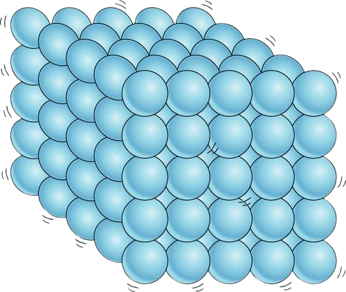
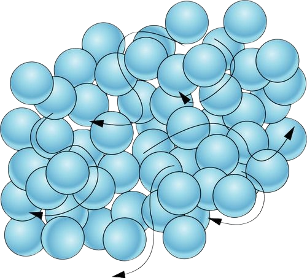
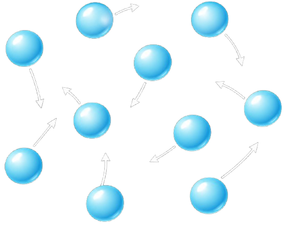
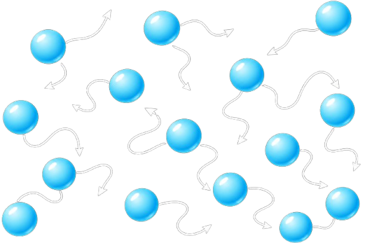

The particles in a solid are packed very tightly with strong forces between one another. Therefore, they have little freedom of movement and can vibrate about affixed position. Solids have a definite shape and volume . They have different colours and different properties. Some solids are hard while others are soft. Some are dense while others are light. However, all solids have common properties, i.e., unlike gases they cannot be composed and do not flow. Solids do expand slightly when heated.

The Liquids ae composed of particles which are not fixed in any definite positions as in the solids. The particles are able to move freely throughout the liquids but not as independently as the gases so that the liquid can take up the shape of the container. Liquid can have a definite volume, because the particles in liquid are held together more strongly than those in gases. Some liquids have colours. However, unlike gases they cannot be compressed but they can flow easily.

The particles in a gas are in constant and rapid motion because of weak attrative forces between gaseous particles. They move freely in all direction until they hit the walls of the container. The gas in a container taking its shape and volume. Hence, gases do not have a definite volume and shape of theif own.
Gases can have different properties. Some gases have colours while others are colourless. However, all gases can easily be compressed and spread in all directions. It can be clearly visible in particles of smoke suspended in a gas. It is because of the effect known as Brownian Motion.

The particles in a gas are in constant and rapid motion because of weak attrative forces between gaseous particles. They move freely in all direction until they hit the walls of the container. The gas in a container taking its shape and volume. Hence, gases do not have a definite volume and shape of theif own.
Gases can have different properties. Some gases have colours while others are colourless. However, all gases can easily be compressed and spread in all directions. It can be clearly visible in particles of smoke suspended in a gas. It is because of the effect known as Brownian Motion.